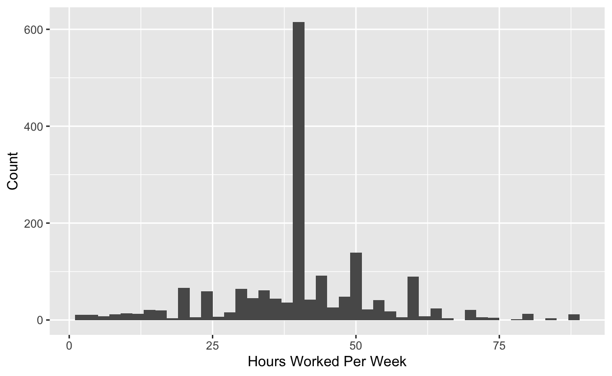

This is still a bit rough! Gaps I plan to fill in are outlined below.
Learning Objectives.
In this tutorial you will learn the basics of CLT-based inference. To begin we load the necessary packages.
library(tidyverse)
library(infer)Recall the Central Limit Theorem. For a population with mean \(\mu\) and standard deviation \(\sigma\) the distribution of \(\bar{X}\) is normal, centered at \(\mu\), and with variability inversely proportional to the square root of the sample size.
\[Z = \frac{\bar{X} - \mu}{\sigma/\sqrt{n}} \sim N(0,1)\] We often never know \(\sigma\) so we estimate from our data using \(s\). The test statistic below as a \(t\)-distribution with \(n-1\) degrees of freedom.
\[T = \frac{\bar{X} - \mu}{s/\sqrt{n}} \sim t_{n-1}\] Relative to the normal distribution, the \(t\) distribution has thicker tails to make up for the additional variability incurred by using \(s\) to estimate \(\sigma\).
We will use the gss data from the infer package. This data set contains a sample of 500 entries from the General Social Survey, a national survey of American society and opinions conducted since 1972.
Remember to familiarize yourself with the data set and variables using the code below.
?gssWe will focus on the hours variable, the number of hours worked in the week before the survey, truncated at 89. Does the sample data provide convincing evidence that Americans, on average, work more than 40 hours per week?
We first conduct a brief exploratory data analysis.
hours_summary <- gss %>%
summarize(xbar = mean(hours),
s = sd(hours),
n = n())
hours_summaryggplot(data = gss, aes(x = hours)) +
geom_histogram(binwidth = 2) +
labs(x = "Hours Worked Per Week", y = "Count")
We next write out the appropriate null and alternative hypothesis.
Next we calculate our test statistic.
First pull our summary data.
n <- hours_summary %>% pull(n)
s <- hours_summary %>% pull(s)
xbar <- hours_summary %>% pull(xbar)Calculate the standard error.
se <- s / sqrt(n)Calculate the test statistic.
t <- (xbar - 40) / seDegrees of freedom.
df <- n - 1Finally, find the \(p\)-value.
pt(t, df, lower.tail = FALSE)## [1] NAThe \(p\)-value is small, so we reject the null hypothesis. These data provide sufficient evidence at \(\alpha = 0.05\) to conclude that Americans, on average, work more than 40 hours per week.
Is the difference practically significant?
Now construct a confidence interval for the mean. Do you expect the confidence interval to include 40?
t_star <- qt(.95, df)
xbar + c(-1,1) * t_star * se## [1] NA NAWe can easily use the t_test function in the infer package to conduct a \(t\)-test. To do this we need to specify the following:
x: a tibbleresponse: the variable in x that serves as the responsemu: the hypothesized null mean valueconf_int: a logical value indicating whether to include a confidence intervalconf_level: the confidence levelt_test(x = gss,
response = hours,
mu = 40,
conf_int = TRUE,
conf_level = 0.95)Another mean example interpreting results from t_test.